Start with a square piece of origami paper
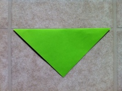Fold the paper in half by taking the top corner and folding it over to the bottom corner
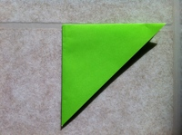Once again, fold the paper in half by taking the left corner and folding it to the right
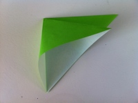Take the top flap and open it, creasing the left and right sides so you can fold the the top corner to the bottom corner
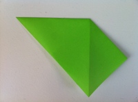Flip the paper and do the same thing on the other side
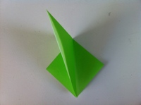Open up the flap and crease the left and right sides so the top corner can meet the bottom corner
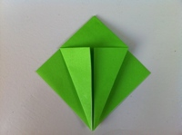Fold the left and right corners from the bottom to meet at the middle
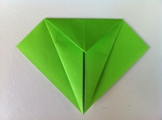Fold the top triangle down
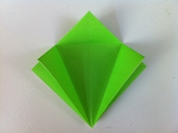Unfold the triangle back up along with the left and right flaps
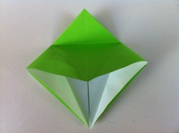Take the bottom of the top layer and open it. Using the creases as guides, fold the left and right sides in to the center
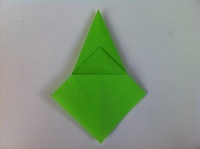Turn the figure over and do the same on the other side
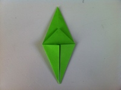Fold the left and right corners in from the bottom to the center
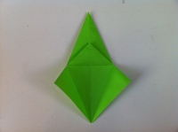Unfold
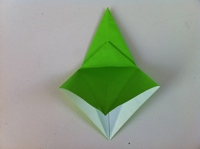Open the top layer beginning at the bottom and lift it all the way up. Using the creases as guides, fold the left and right sides in to the center
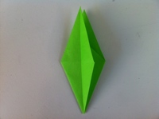Take the top layer from the right side and fold it over to the left
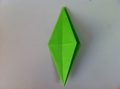Turn the figure over so and repeat the step on the other side
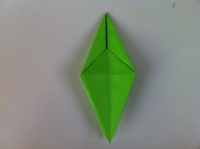Fold the right flap over to the left
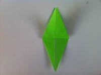Take the bottom corner of the top layer and fold it up
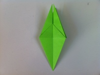Turn the figure over to the other side
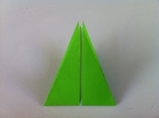Fold the bottom flap up
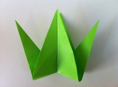Take the two wedges inside and pull them out like you see in the picture
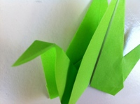Take the left wedge and open it slightly and bend a portion down to form the head. Do an inside reverse fold by pushing the center of the head down and creasing the left and right sides together
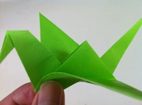Here's the tricky part. Hold the chest of the bird including a little bit of the wing, and fold the rest of the wing down. You don't need a sharp fold here, just keep molding the wing until it stays down
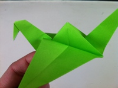Pull the tail and the bird will come alive!